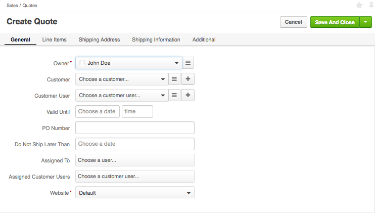
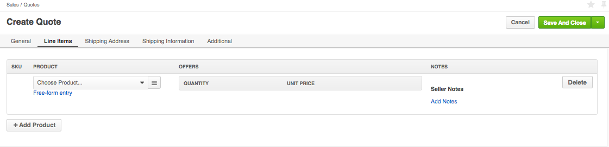
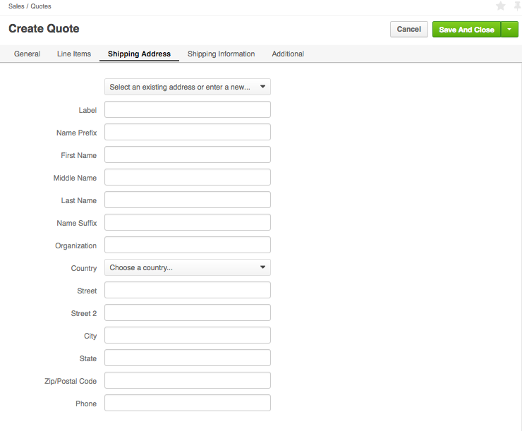
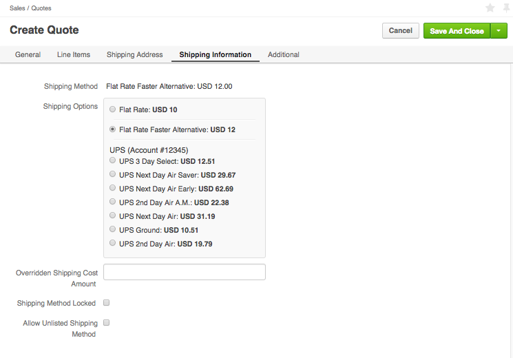

Create a Quote¶
You can create a quote based on the customer request for quote, or from scratch, based on the customer interaction outside OroCommerce.
Create a Quote From Scratch¶
To create a new quote from scratch:
Navigate to Sales > Quotes in the main menu.

Click Create Quote.

In the General section:
- Select a Customer and Customer User to create a quote for.
- Enter the quote expiration information in the Valid Until date and time boxes.
- Optionally, enter a PO Number for the customer reference.
- If necessary, set the Do Not Ship Later Than date, to limit the order validity based on the information from the customer.
- Select an order fulfilment officer in the Assigned To box.
- Select the assigned customer user that will receive the order delivery in the Assigned Customer box.
- Select a Website to make this quote visible only on the specified website.
In the Line Items section:
Add products as quote line items.
Use Select Product and Free-form entry link to switch between the following product entry modes:
Select a Product: Select the product using search (v) or from the product list (=).
Free-Form Entry: Type in the SKU and/or Product Name.
Fill in the offer:
- Provide quantity and select a product unit measurement.
- Check or more to allow the customer to increase the quantity in the order.
- Type in the unit price and select a currency.
To offer alternative quantity and prices, use + Add Offer.
Add notes to the quote line, if necessary: click Add notes in the Seller Notes section.
Note
To delete any quote line, click Delete on the right of the line item information group.
Add more products, if necessary, by clicking + Add Products below the existing product lines.
In the Shipping Address section, enter the shipping address, organization name and name of the person the future order should be shipped to.
In the Shipping Information section, configure the recommended shipping options for the customer:
- In the Shipping Methods list, select the recommended (default) shipping method that will be pre-selected when the customer gets to the shipping configuration on the checkout.
- Optionally, enter the Overridden Shipping Cost Amount, USD - a custom shipping cost that will be used instead of the one dynamically generated based on the shipping method selection.
- To enforce using only the default Shipping method selected earlier, enable the Shipping Method Locked flag. When the shippig method is locked, the buyer does not see any other payment options but the default one.
- Tick the Allow Unlisted Shipping Methods box to allow using the shipping method that is already selected as a default one, even if it is disabled by the shipping rule configuration.
Optionally, select a Payment Term as an available payment method.
- Click Save.